チャット機能
チャット機能について
POPstationでは、AIとのインタラクティブなチャットを通じて、様々なタスクを支援します。
チャット送信
-
メッセージ入力: 画面下部のメッセージ欄に、AIに尋ねたいことや、依頼するタスクの内容を入力します。
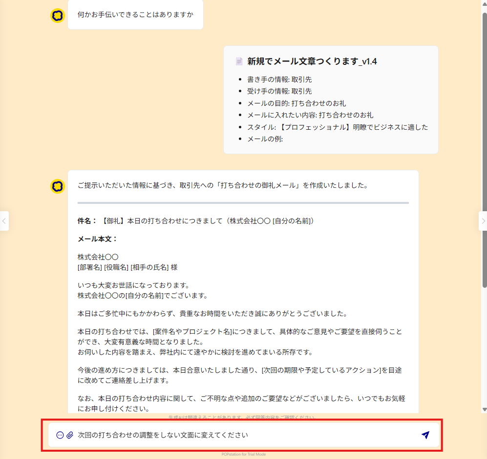
-
送信: 入力した内容を送信するには、Ctrl + Enterキーを押すか、メッセージ欄右側の送信ボタンをクリックします。
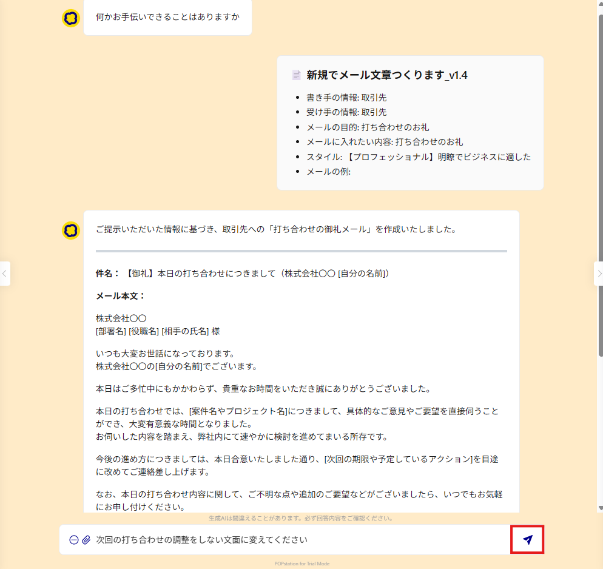
-
AIからの応答: メッセージ送信後、POPstationがリクエストを処理し、最適な回答を生成します。回答はメッセージ欄の上に表示され、チャット形式でやり取りが続きます。
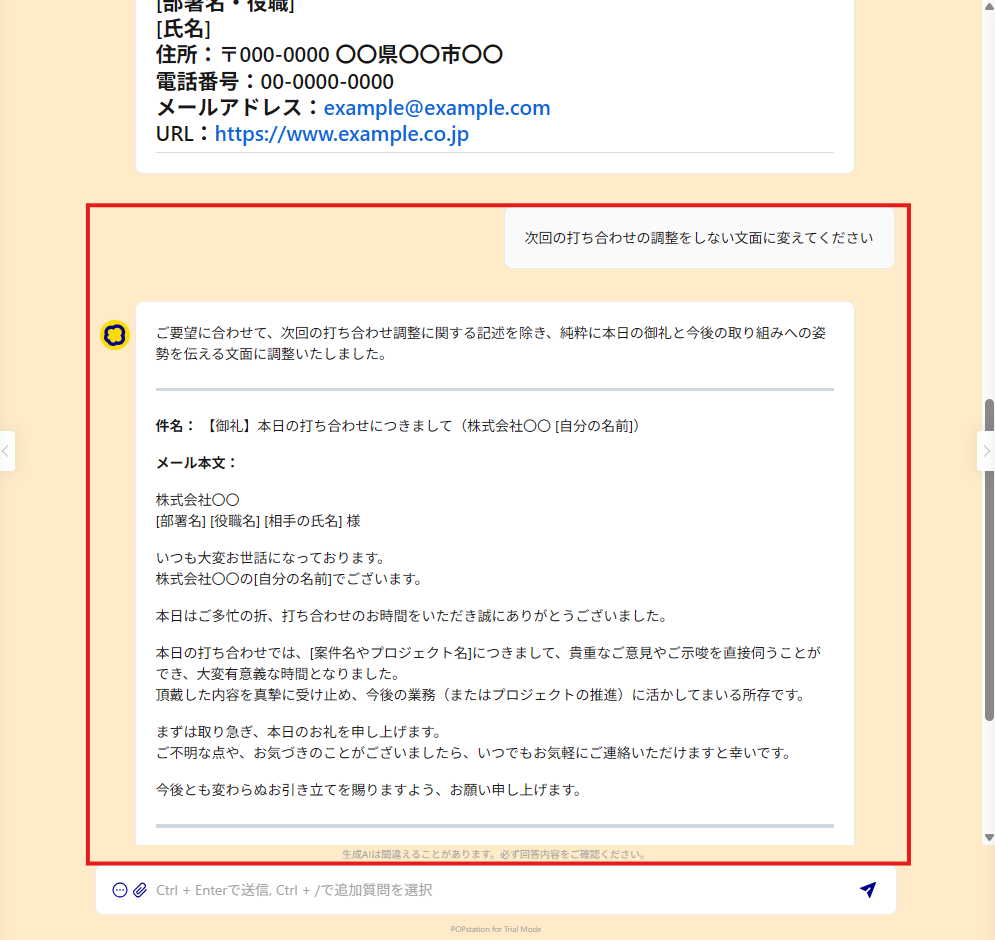
プロンプトの修正・再送信
送信済みのメッセージを直接編集して再送信できます。 プロンプトの微調整や「やり直し」がスムーズに行えます。
-
編集ボタンのクリック: 送信したメッセージの下に表示される編集ボタンをクリックします。
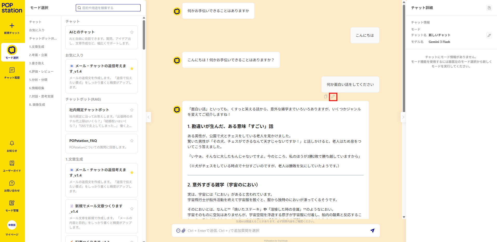
-
メッセージの編集: 入力欄が表示されるので、内容を修正します。
-
再送信: 「変更して再送信」ボタンをクリックすると、修正した内容でAIが回答を再生成します。
初回実行時のプロンプト修正について
チャットの1回目（最初にモードを実行した際）のメッセージは編集できません。最初のメッセージの内容や条件を変更したい場合は、チャット詳細画面の「条件を変更して再実行」機能をご利用ください。
ファイル入力機能
ファイル入力機能に対応しているAIモデル（現在Geminiシリーズのみ）では、画像・文書・音声・動画に加え、PowerPoint・Excel・Word・CSVの入力ができます。
※モデルごとに対応しているファイル形式やファイル数は異なります。AIモデル比較表をご参照ください。
ファイルの変換と精度について
- CSVファイル: テキストデータに変換して読み込まれます。
- PowerPoint, Excel, Wordファイル: PDFに変換して読み込まれます。
- PowerPointは、スライド枠外のオブジェクトは変換されません。
- 内部的に「印刷」イメージでPDF化されるため、複雑なレイアウトや改ページの影響を受ける可能性があります。
ファイルの保存期間について
- セキュリティの都合上、アップロードされたファイルは30日後に自動的に削除されます。
- ファイルが削除された後もチャット履歴は残りますが、ファイルの内容を参照することはできなくなります（ファイルが除外された状態で会話が継続されます）。
チャット送信欄のクリップアイコンをクリックし、ファイルを選択すると、ファイルをアップロードできます。
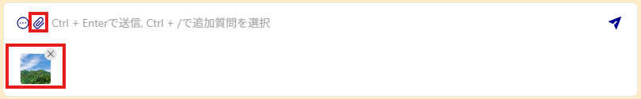
クリップボードからの画像入力機能
クリップボードから画像を入力することもできます。
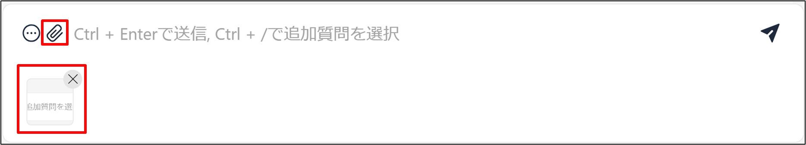
- スクリーンショット機能などを使い、貼り付けたい画像をクリップボードに保存します。
- 貼り付け機能を使い、メッセージ欄に貼り付けます。（Windowsであれば、Ctrl + V、右クリック → 貼り付け など）
- メッセージ欄に画像ファイルがアップロードされます。
検索のオンオフ切替機能
データ参照先を指定してモードを実行した場合、チャット画面で検索機能のオン/オフを切り替えることができます。
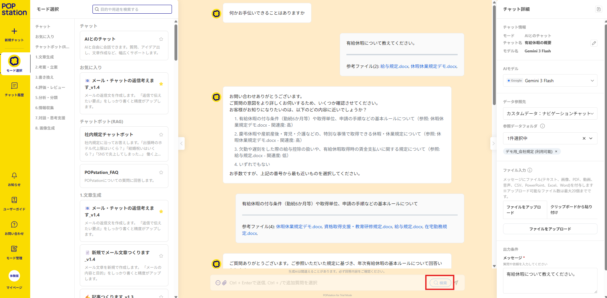
-
検索がオンの場合（デフォルト）
メッセージ送信時に、指定したデータ参照先（カスタムデータ、Web検索、URL読込）を検索し、その結果を考慮してAIが回答を生成します。
-
検索がオフの場合
メッセージ送信時に検索を行わず、それまでの対話の文脈（チャット履歴）とAIが持つ知識のみで回答を生成します
検索のオンオフ切替機能が利用できるとき
この検索のオンオフ切替機能は、「カスタムデータ」「Web検索」「URL読込」のいずれかのデータ参照先が選択されている場合にのみ表示されます。
追加質問テンプレート機能
対話を通してより深く掘り下げるための「追加質問テンプレート機能」についてご説明します。
-
追加質問入力の起動: チャット画面左下のボタンをクリックするか、「Ctrl + /」キーを押すと、追加質問入力モードに切り替わります。
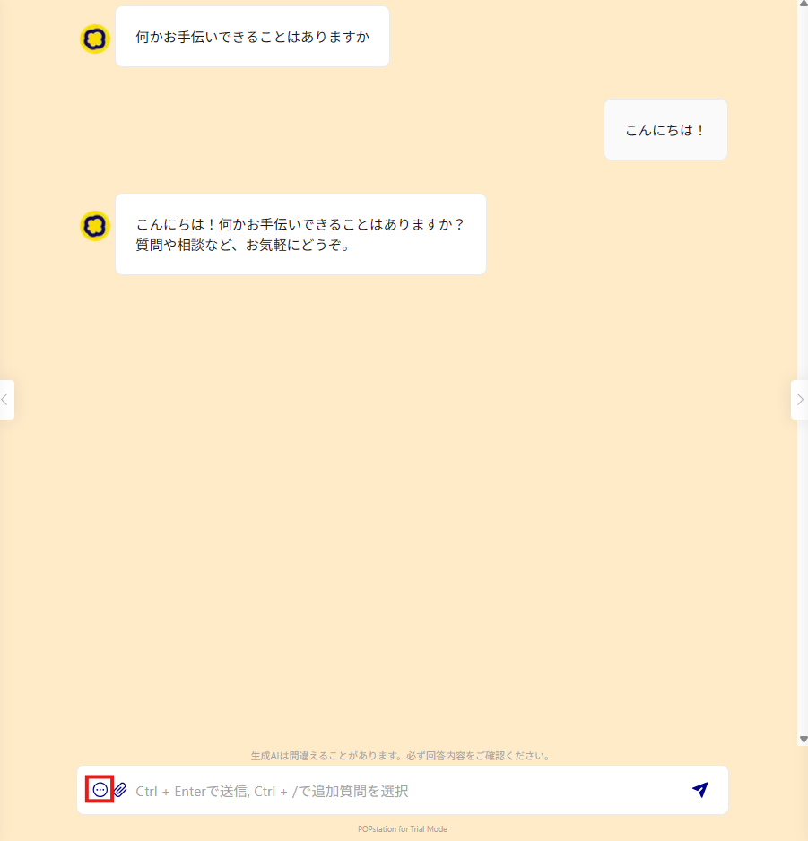
-
プロンプトの選択: 表示された追加質問のリストから、AIに尋ねたい内容に最適なものを選択します。
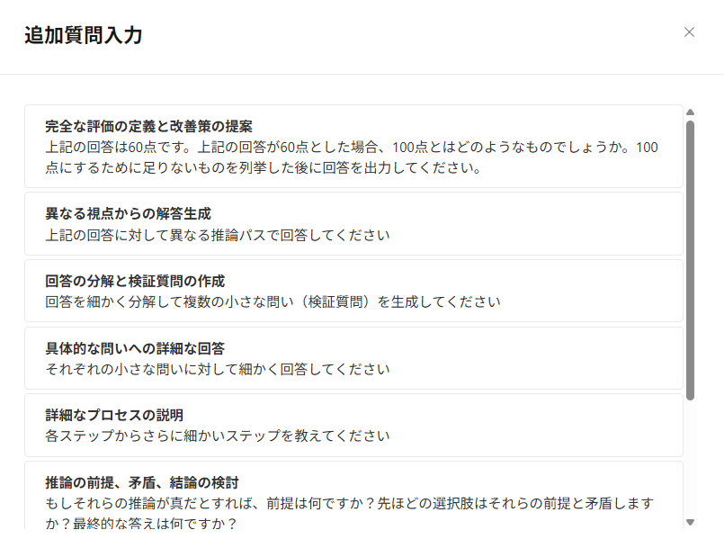
-
送信と回答: 選択した追加質問は自動的にメッセージ欄に入力されます。送信ボタンをクリックすると、AIが質問に対する回答を生成します。
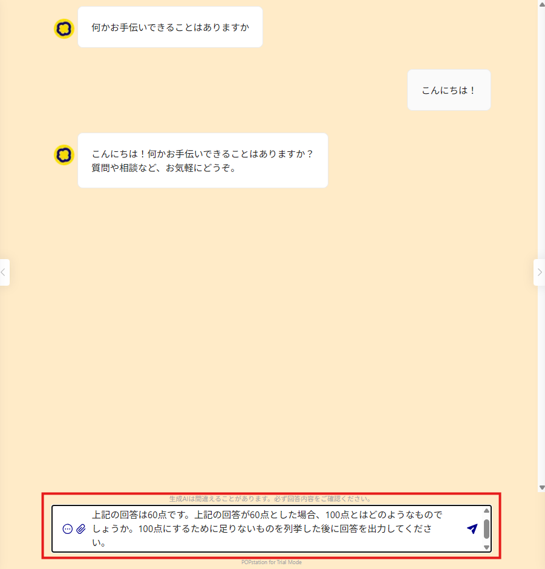
活用例
- AIの回答が抽象的だと感じた場合、「具体的な問いへの詳細な回答」を選択して、より具体的な説明を求めることができます。
- 異なる視点からの意見を知りたい場合、「異なる視点からの解答生成」を選択して、多角的な分析を依頼することができます。
チャット中断機能
AIの回答を待っている間に、内容を変更したくなったり、別のタスクに取り掛かりたくなる場合があります。
そのような場合に柔軟に対応できるよう「チャット中断」機能を提供しています。
-
中断ボタンの表示: POPstationが回答を生成している間は、メッセージ入力欄に「中断」ボタンが表示されます。
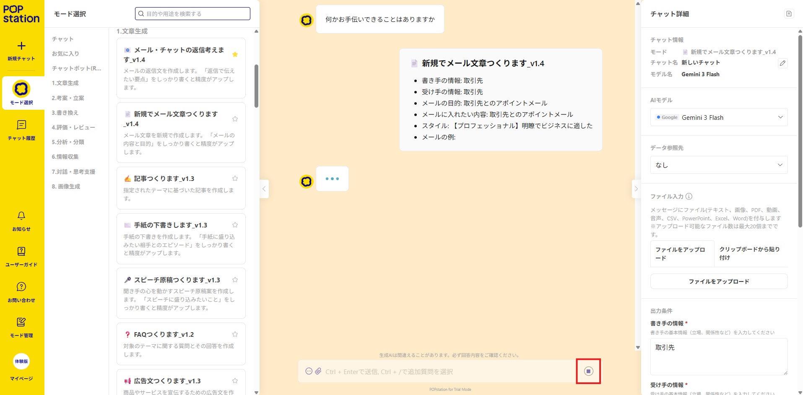
-
中断の実行: 「中断」ボタンをクリックすると、AIの回答生成処理が中断されます。
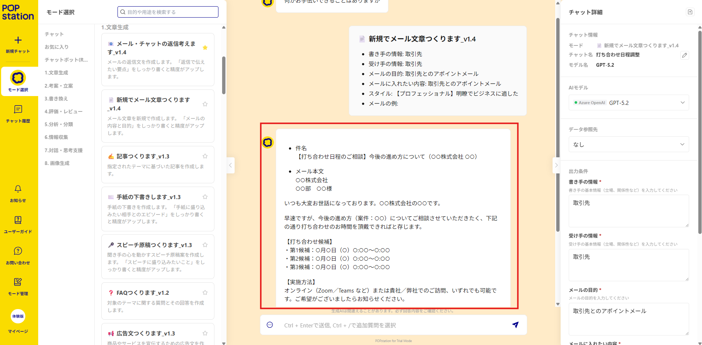
- 中断された時点までの回答内容は、チャット履歴に保持されます。
注意点
回答を中断しても、すべて回答を生成した場合と利用料金は変わりませんのでご注意ください。
会話の仕組み
以下のような仕組みで、AIと会話をしています。
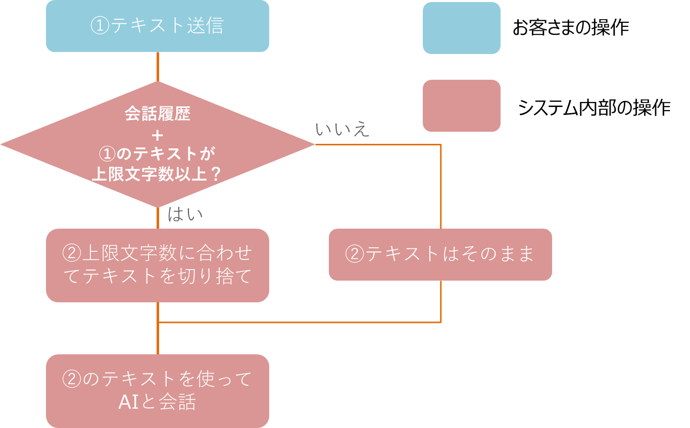
モデルの文字数上限について
- 各AIモデルに処理できるテキストの文字数上限が設定されています。
- 同一モード内のチャット履歴を含めて会話をしますので、連続してチャットする際は文字数の超過にご注意ください。
- 入力したテキストが上限文字数を超えた場合、超過した部分は自動的に切り捨てられます。
- 各モデルの文字数上限については、AIモデル比較表をご参照ください。